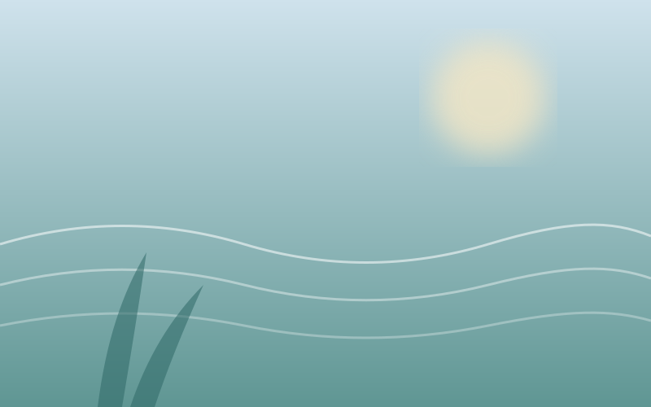
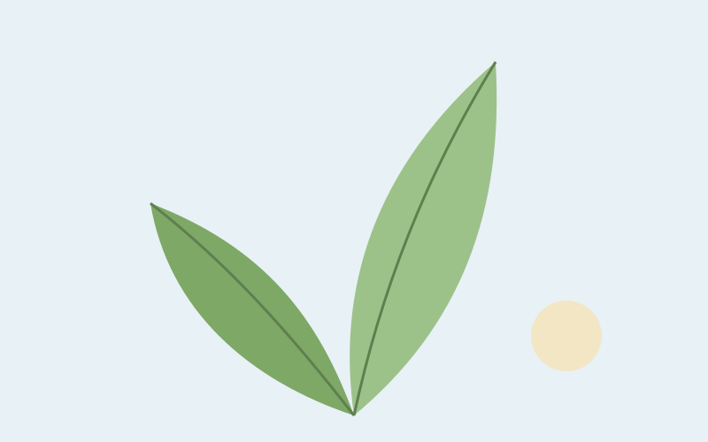
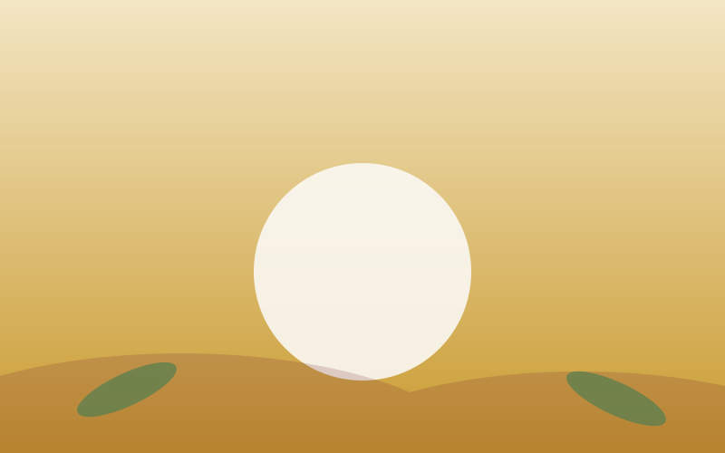

Quando a preocupação deixa de ser passageira
Como diferenciar a ansiedade do dia a dia de um quadro que merece atenção profissional.

Como diferenciar a ansiedade do dia a dia de um quadro que merece atenção profissional.
Por que dormir mal afeta o humor e como pequenas mudanças de rotina podem ajudar.

Desatenção, esquecimentos e procrastinação podem ter uma explicação, e um caminho.

Um exercício simples de respiração para os momentos de tensão.
Desfazendo mitos comuns e abrindo espaço para o cuidado.
Algumas ideias para aproveitar melhor o primeiro encontro.
Artigos de exemplo, com conteúdo educativo geral. Eles não substituem uma avaliação profissional e devem ser revisados ou substituídos pelos textos de Drew antes da publicação.
Inspire 4 s · segure 4 s · expire 6 s
Se você está em risco, procure ajuda imediata:
Sentir ansiedade diante de um desafio é natural. Ela nos prepara para agir. O sinal de alerta aparece quando a preocupação se torna constante, desproporcional e começa a atrapalhar o sono, o trabalho e as relações.
Tensão muscular frequente, irritabilidade, dificuldade de concentração, sensação de que algo ruim vai acontecer e evitar situações por medo são alguns exemplos.
Uma avaliação cuidadosa permite entender o que está por trás dos sintomas e construir um plano com estratégias práticas de enfrentamento, psicoterapia e, quando indicado, medicação.
O sono e a saúde mental se influenciam o tempo todo: noites mal dormidas intensificam ansiedade e irritabilidade, e o sofrimento emocional, por sua vez, dificulta o descanso.
Horários regulares, luz natural pela manhã, redução de telas antes de deitar e um ritual tranquilo de fim de dia costumam fazer diferença.
Se a dificuldade para dormir persiste por semanas ou vem acompanhada de mudanças de humor, vale conversar com um profissional de saúde mental.
O TDAH não termina na infância. Muitos adultos convivem com dificuldades de foco, organização e gestão do tempo sem saber que existe uma explicação para isso.
A avaliação considera a história de vida, os sintomas atuais e o impacto deles no dia a dia, sempre com cuidado para diferenciar o TDAH de outras condições.
O cuidado pode combinar estratégias práticas de organização, psicoterapia e, quando indicado, acompanhamento medicamentoso.
A respiração é uma das ferramentas mais acessíveis para acalmar o corpo. Ao alongar a expiração, sinalizamos ao sistema nervoso que é seguro desacelerar.
Inspire pelo nariz contando até quatro, segure por quatro e solte o ar devagar contando até seis. Repita por três minutos. Você encontra um guia interativo na seção de recursos desta página.
A depressão é uma condição de saúde, não um sinal de fraqueza. Ela pode afetar a energia, o sono, o apetite, a concentração e a capacidade de sentir prazer.
Falar sobre o que você sente com alguém de confiança e buscar uma avaliação profissional são passos importantes. Existe tratamento, e ele é construído de acordo com cada pessoa.
Não existe jeito certo de chegar à primeira consulta, mas algumas anotações podem ajudar.
O que você tem sentido e há quanto tempo, medicações em uso, histórico de tratamentos anteriores e o que você espera do acompanhamento.
Procure um lugar reservado, com boa conexão e fones de ouvido, para conversar com tranquilidade.